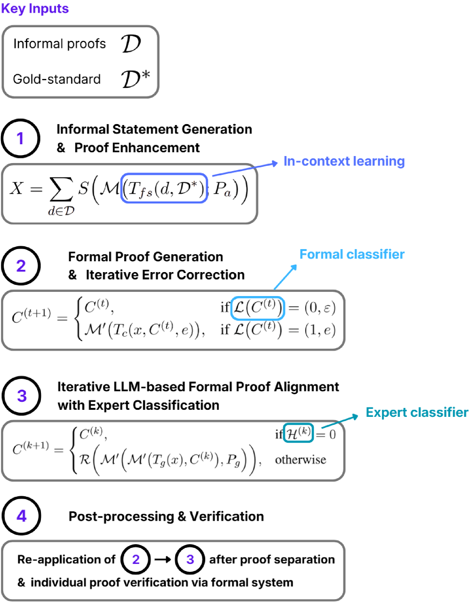

A human-in-the-loop agentic pipeline autoformalises informal physics reasoning into compiling Lean 4 / Mathlib code, producing the 200-problem FormalPhysics dataset.
Abstract
Formalising informal mathematical reasoning into formally verifiable code is a significant challenge for large language models. In scientific fields such as physics, domain-specific machinery (\textit{e.g.} Dirac notation, vector calculus) imposes additional formalisation challenges that modern LLMs and agentic approaches have yet to tackle. To aid autoformalisation in scientific domains, we present FormalScience; a domain-agnostic human-in-the-loop agentic pipeline that enables a single domain expert (without deep formal language experience) to produce \textit{syntactically correct} and \textit{semantically aligned} formal proofs of informal reasoning for low economic cost. Applying FormalScience to physics, we construct FormalPhysics, a dataset of 200 university-level (LaTeX) physics problems and solutions (primarily quantum mechanics and electromagnetism), along with their Lean4 formal representations. Compared to existing formal math benchmarks, FormalPhysics achieves perfect formal validity and exhibits greater statement complexity. We evaluate open-source models and proprietary systems on a statement autoformalisation task on our dataset via zero-shot prompting, self-refinement with error feedback, and a novel multi-stage agentic approach, and explore autoformalisation limitations in modern LLM-based approaches. We provide the first systematic characterisation of semantic drift in physics autoformalisation in terms of concepts such as notational collapse and abstraction elevation which reveals what formal language verifies when full semantic preservation is unattainable. We release the codebase together with an interactive UI-based FormalScience system which facilitates autoformalisation and theorem proving in scientific domains beyond physics.https://github.com/jmeadows17/formal-science
Problem
Autoformalisation in scientific domains like physics faces challenges beyond standard mathematics due to domain-specific notation (Dirac notation, vector calculus) and semantic drift that current LLMs and agentic approaches do not handle well.
Approach
FormalScience is a domain-agnostic human-in-the-loop agentic pipeline that enables a single domain expert (without formal language experience) to produce syntactically correct and semantically aligned Lean 4 formal proofs at low cost. The pipeline uses few-shot prompting to generate statement-proof pairs, iterative self-refinement with Lean compiler error feedback, and human verification at key stages. Applied to physics, it produces FormalPhysics: 200 university-level physics problems (quantum mechanics and electromagnetism) with Lean 4 formal representations.

Figure 1: An overview of the FormalScience approach.
Results
FormalPhysics achieves 100% formal validity and exhibits greater statement complexity than existing benchmarks. The paper provides the first systematic characterisation of semantic drift in physics autoformalisation, identifying patterns such as notational collapse and abstraction elevation.